Jekyll N' Hyde showreel – photography, film and post-production
Photography
With years of expertise in photo retouching, moving into photography was a natural progression for us. From small projects to managing national and international campaigns, we collaborate closely with advertising agencies, creatives and more. No project is too small or too big for us. Teamwork is at the heart of everything we do, and we are just as enthusiastic about creating stunning product shots in our studio as we are about orchestrating grand outdoor shoots.
Film
Driven by strong client demand, we made film our next step. Our extensive experience in photographic production and lighting gave us the confidence to dive into the world of filmmaking. We primarily craft compelling commercials, and also venture into music videos and fiction. Telling beautiful stories with stunning visuals is a daily joy for us.
Post-production
Post-production is our foundation. Over the years, our strength has been our ability to seamlessly blend photo and video production, and we are equally confident in both. It is the crucial step that elevates a good project into a breathtaking final product. This phase allows us to explore new creative possibilities and refine our vision. Ultimately, it’s where the magic happens, adding that special touch to every project.
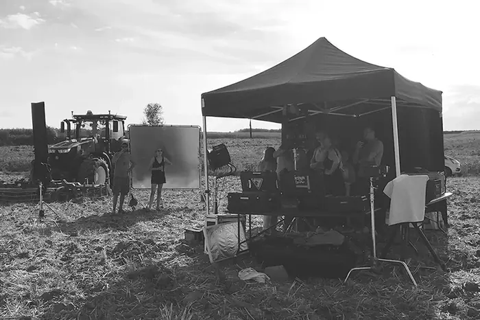
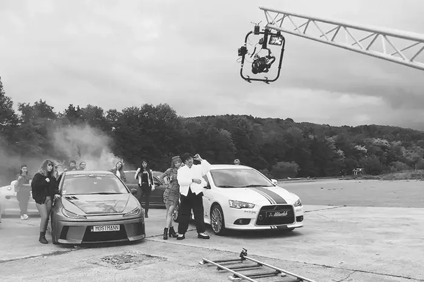
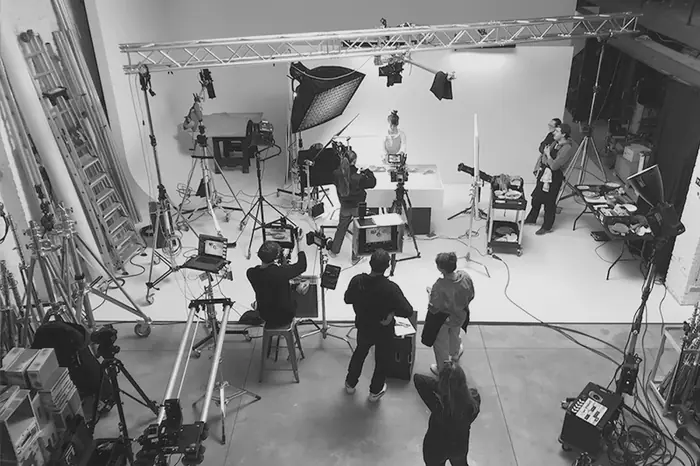
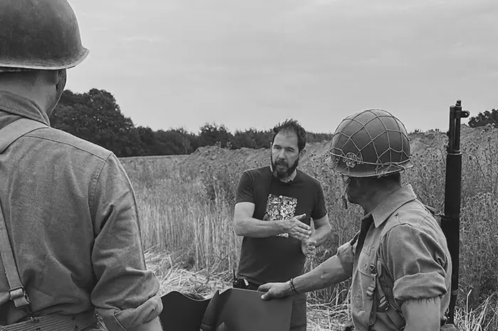
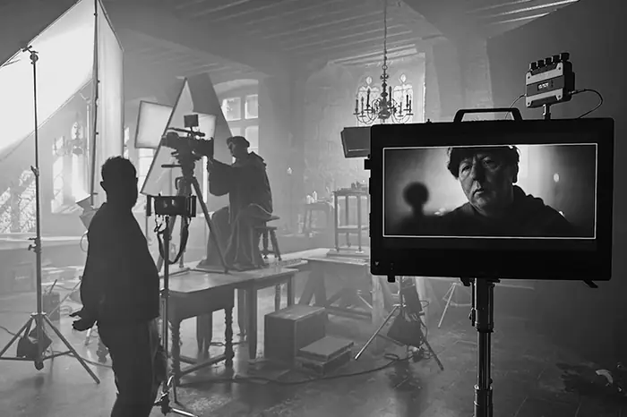
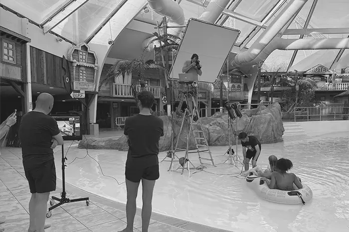
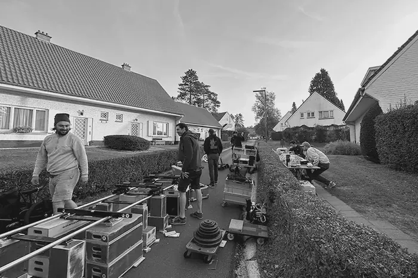
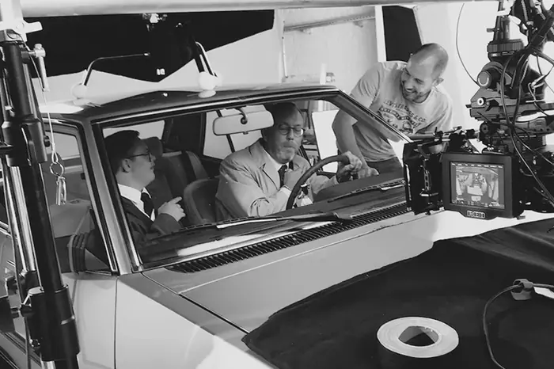
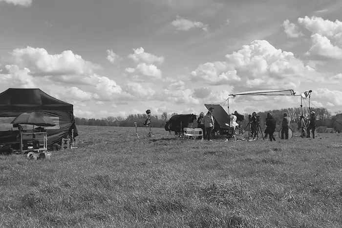
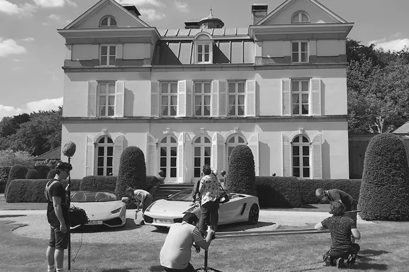
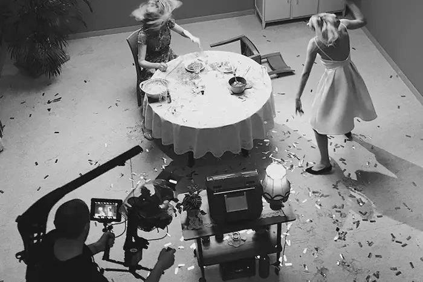
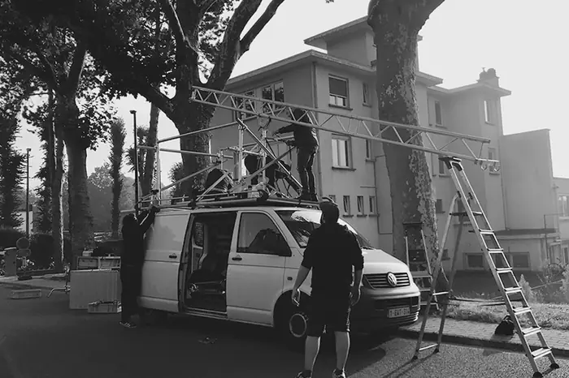
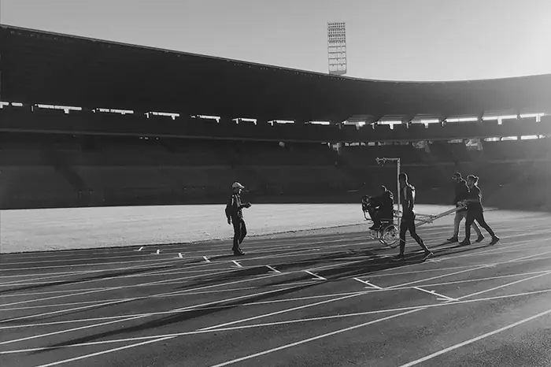
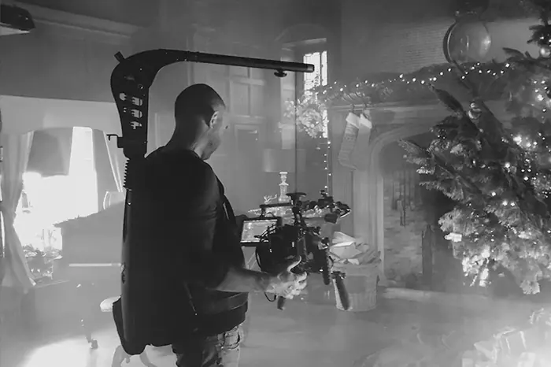